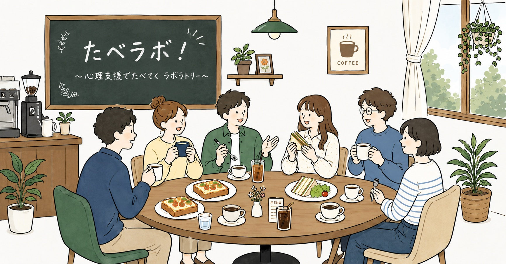
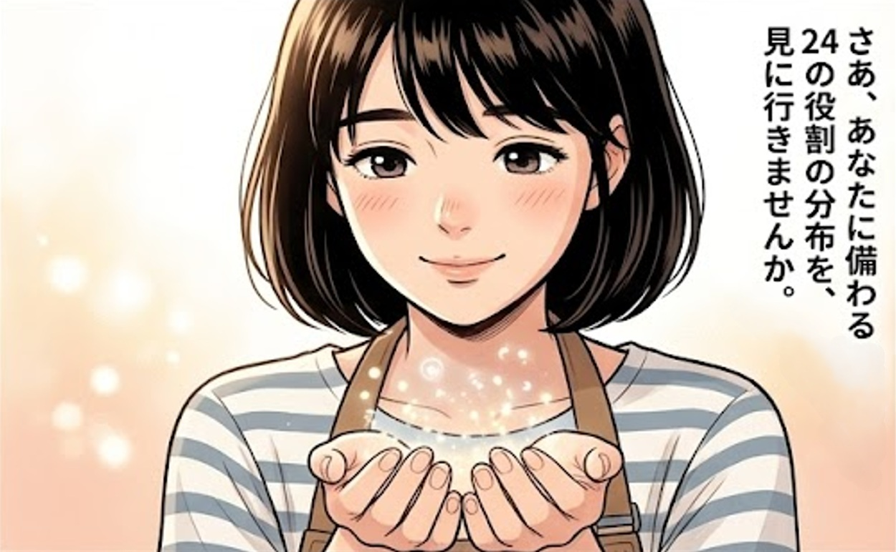
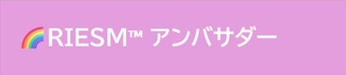

企業理念や各メインサービスの全体像をご覧いただけます。

心理支援の仕事で【たべていくラボラトリー】。あなたの集客をお手伝いします。
あなたの心のコックピット。なぜ上手くいかないのか、なぜ辛いのか。そして、どうすればラクに自分を操縦できるかがわかります。
マンガでわかる！RIESM™

タップするとRIESM™のページが開きます
有償の支援活動でRIESM™を使いたい方へ

RIESM™のワークショップを無償で開催したい方へ
【時系列×二次元配置×人の顔！】で、心理学者と理論がぐんぐん記憶に定着します。
オリジナル予想問題、心理学者のエピソード、年表でわかる法制度の流れ…。あなたの試験学習の日々に伴走します✨
ココナラ キャリコンと産業カウンセラーの実技・面接試験支援。単なるロープレ相手ではなく、理論・型・一人ひとりの特性に合わせた実力向上をお約束します。
リアルタイムな発信と対話の場
ビジネスプロフィール